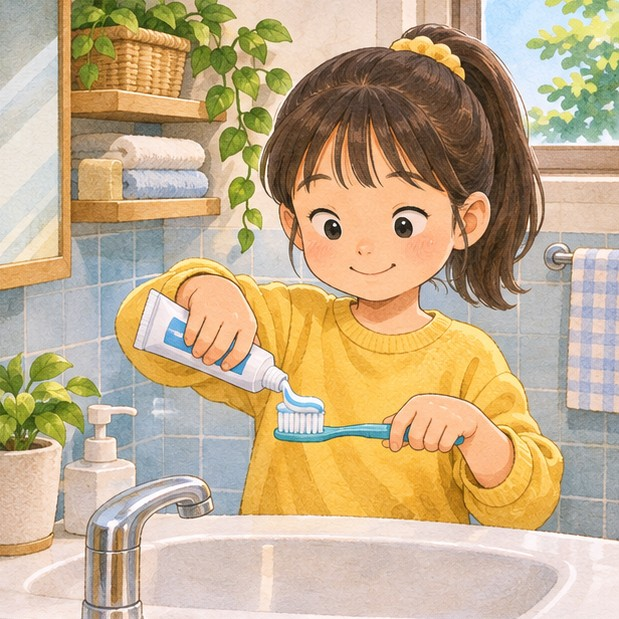
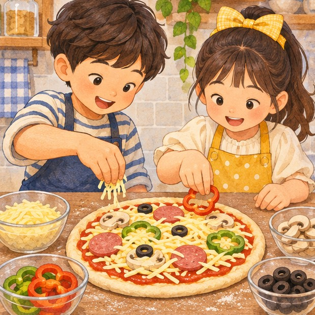
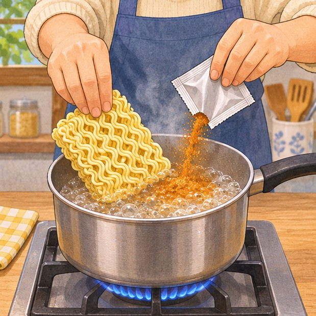

ONURI / PLAY TOGETHER
절차적 사고
무엇을 먼저 하고, 그다음엔 무엇을 할까요? 그림 카드로 일상생활의 순서를 맞춰 보세요.



그림 카드를 번호 칸으로 끌어 놓거나, 카드와 번호 칸을 차례로 눌러 보세요.
ONURI / PLAY TOGETHER
무엇을 먼저 하고, 그다음엔 무엇을 할까요? 그림 카드로 일상생활의 순서를 맞춰 보세요.



그림 카드를 번호 칸으로 끌어 놓거나, 카드와 번호 칸을 차례로 눌러 보세요.